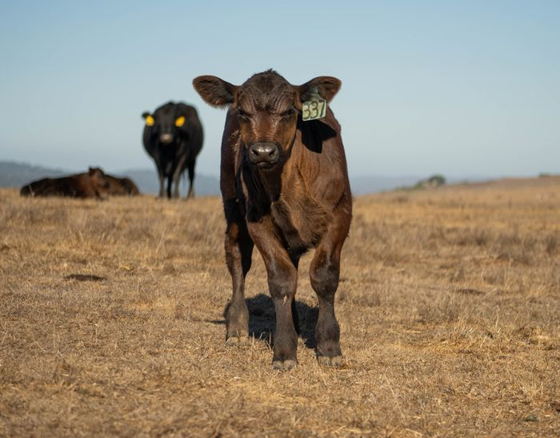
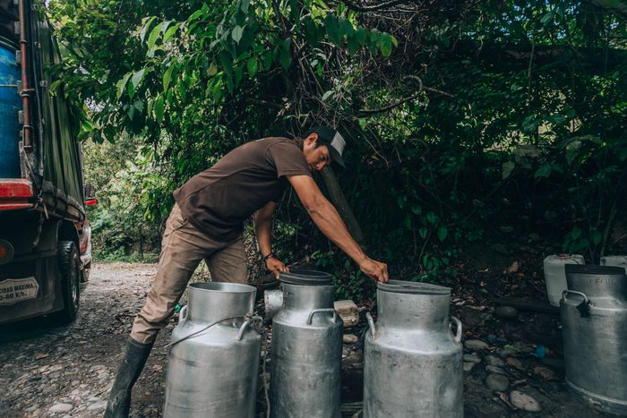
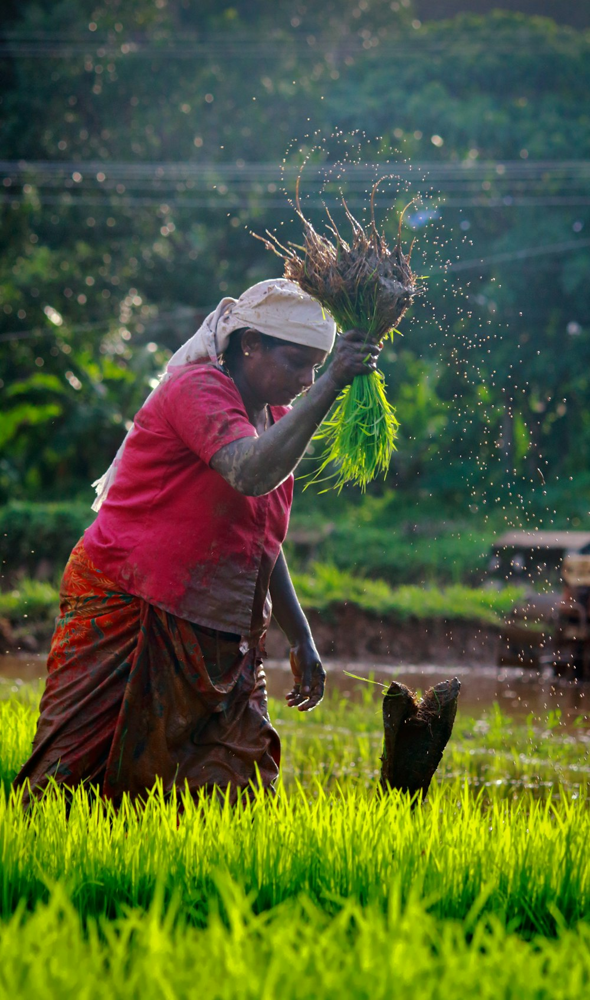
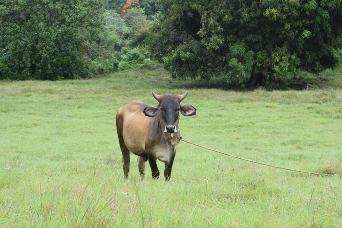
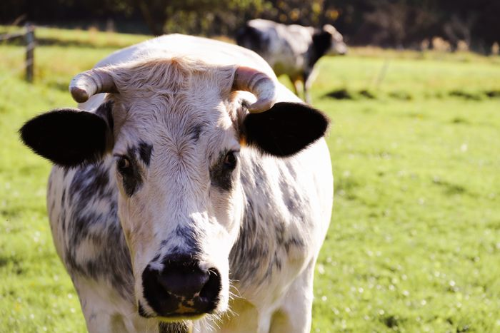
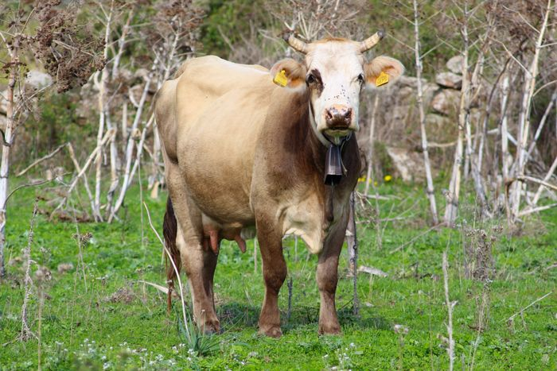

Eight cows and a stubborn idea
Meera and Arjun began selling glass bottles to forty families in Vadavalli. Every bottle was washed by hand, every route driven before work.

We began with eight cows, one steel pail and a borrowed fridge. Ten years later, we still believe the measure of a dairy is how it treats the quietest hours of the morning.

We have said no to more expansion than we have said yes to. Every new route begins only when the farm, the herd and the people are ready.
Meera and Arjun began selling glass bottles to forty families in Vadavalli. Every bottle was washed by hand, every route driven before work.

We partnered with two Gir farms in Pollachi and chose smaller, slower milk over volume. The first A2 Gir bottle sold out in a morning.

We retired everyday plastic pouches for returnable glass. It was expensive, inconvenient and exactly right. Customers kept the loop alive.

Three thousand families later, our delivery team still remembers who takes curd on Fridays and who leaves the empty bottles by the gate.

These are not aspirations on a wall. They are daily decisions about feed, temperature, packaging, pay and the pace of growth.

Healthy soil grows better grass. Better grass makes calmer animals and milk with more character.

We pay above market, on time, every week — and buy the milk that doesn't make our cut.
Chilled within the hour, delivered within nine. Every batch carries its own clock.
Every bottle is linked to a farm, a batch and a person who can answer for it.
Glass returns. Whey is used. Surplus finds its way into curd, paneer and nothing else.
FSSAI certified, batch-tested and open to the people who drink our milk.
No models, no set dressing. These are the sights our team sees between 4:30 and 9 AM.






A herdsperson, a dairy scientist, a route lead and a customer host. Four people who make the morning work.

We will keep the herd small enough to know, the route short enough to care about, and the bottle returnable for as long as glass will have us. If growth ever asks us to break one of those, we will choose the dairy we already are.